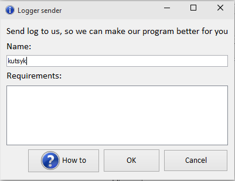

Feedback
When your file is not translated well, than you should send logger file, so we can make conversion better.

You should input your name, so we can remember you as an user and always see your requirements.
Input your requirements by this template:
LaTeX:
\begin{theorem}
\label{nph-thm}
The Max $C_{LC}$ Problem is NP-Hard.
\end{theorem}
IS:
<p>theorem</p>
<label>nph-thm</label>
The Max $C_{LC}$ Problem is NP-Hard.
<p>theorem</p>
Should be:
<theorem>
<label>nph-thm</label>
The Max $C_{LC}$ Problem is NP-Hard.
</theorem>
Created with the Personal Edition of HelpNDoc: Easy CHM and documentation editor